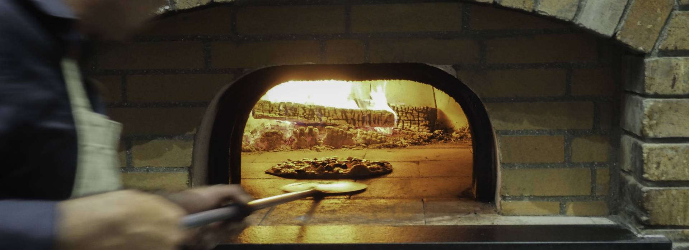
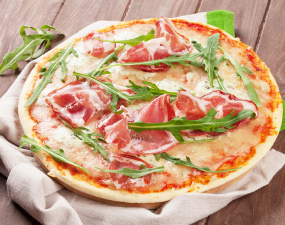
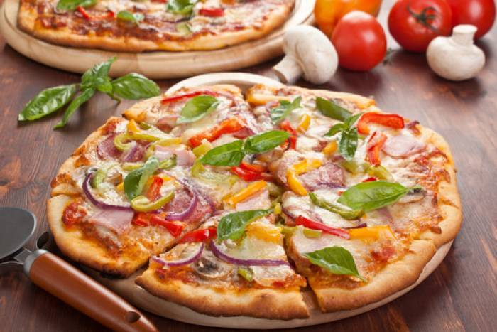
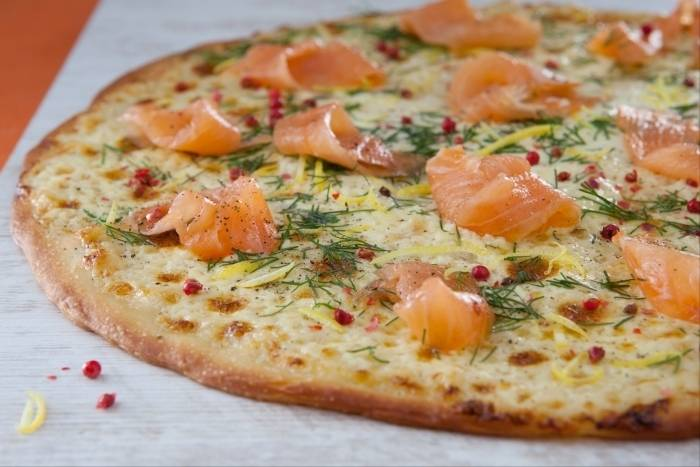

Les fours pour pizzéria Le Panyol Pro sont des fours à bois à sole fixe et chauffe directe qui permettent l'appellation cuit au feu de bois . La qualité de notre terre cuite vous garantit une cuisson très rapide , et une sole où votre pâte ,fine ou épaisse , n'accrochera pas . À l'usage , nos clients constatent que la grande capacité d'accumulation de chaleur de nos pièces a permis une baisse de moitié de leur consommation de bois .
Nos fours sont entièrement conçus en terre cuite réfractaire . La Terre Blanche de Larnage , associée à l’eau , dans des proportions jalousement gardées depuis sept générations , est l’unique matière de nos fours .
De l’extraction de la terre blanche dans notre carrière , jusqu’au façonnage des pièces de votre four à bois ; à chaque étape de notre chaîne de fabrication , nous nous inscrivons dans une démarche de développement durable , et sommes très attentifs au respect de l’environnement .
Les fours à bois Le Panyol Pro offrent un maintien homogène de la température de la sole et de la chambre de cuisson grâce à la masse réfractaire en Terre Blanche de Larnage , matériau de référence pour la construction des fours à bois professionnels depuis 1840 ! Cette grande inertie permet plusieurs fournées de pain pour une seule chauffe une faible consommation de bois : environ 1 stère par mois pour une pizzeria ouverte 6 jours sur 7 => 30% d'économie en moyenne par rapport à un four électrique ou au gaz . De plus : Bois = énergie peu coûteuse , renouvelable et disponible à proximité .
Rapidement chaud Contrairement aux fours d'antan qui nécessitaient d'être chauffés la veille , 1h à 2h suffisent pour chauffer le four et atteindre la pyrolyse . Ce temps est d'autant plus réduit si le four est utilisé tous les jours . Dans ces cas-là , grâce à l'inertie et l'accumulation de chaleur dans la terre cuite , la descente en température est très lente . Quelques bûches de bois bien sec suffiront à relancer le four .
Pas d'électronique , pas de mécanique . Enfournement et défournement simples . Le système de gueulard pour les gros fours permet une gestion simplifiée du feu !
Le Panyol est auto-nettoyant . Le processus de Pyrolyse . Montée de la température à +400°C en début de chauffe détruit intégralement les résidus alimentaires , aussi gras soient-ils , des cuissons précédentes . Si jamais votre four reste inactif plusieurs mois , il faudra effectuer une phase de dérhumage pendant quelques jours , en amont de la reprise de son activité . Point incontournable commun à tous les fours : un ramonage du conduit est conseillé une à deux fois par an en fonction des normes en vigueur .
Toutes les cuissons sont possibles dans un Le Panyol . Four culinaire , il est à la fois four à pain , four à pizza et barbecue . Pour les grillades , cuisson directement sur la sole (sans grille) : Plus sain car pas de contact avec la flamme Pas de fumée ni d'odeurs désagréables . Pas de grille à nettoyer – pyrolyse naturelle du feu suivant Découvrez en vidéo toutes les possibilités du cuisson .
Les fours Le Panyol sont Certifiés « alimentaire catégorie 1 » . Grâce aux qualités réfractaires exceptionnelles de la Terre Blanche de Larnage , les cuissons peuvent être réalisées directement sur la sole du four sans crainte d’attacher ou de dessèchement . Quant aux aliments , leurs goûts et textures seront tout autant préservés que sublimés , notamment grâce aux vertus de la chaleur tournante et de la cuisson par inertie .
Toutes les étapes de fabrication de nos fours sont réalisées dans notre usine historique de Tain l’Hermitage , où de nombreuses opérations de façonnage restent manuelles et inchangées depuis 1840 . Cela rend les compétences de certains nos salariés , présents depuis plusieurs décennies , d’autant plus précieuses .
En reconnaissance de notre savoir-faire , l’état nous a attribué le label EPV , (Entreprise du Patrimoine Vivant) , marque de reconnaissance pour distinguer les entreprises françaises aux savoir-faire artisanaux et industriels d’excellence .
Entièrement constitués d’un matériau noble et naturel assemblé selon un savoir-faire traditionnel , les fours Le Panyol , à la durabilité éprouvée depuis plus de 160 ans , valorisent votre habitat , et seront un legs aux générations futures . Dans certaines régions , il n’est pas rare de croiser des fours Le Panyol , sous leur ancien nom – Terrassier - encore en activité et datant de la fin du XVIIIIème siècle .
Grâce à la Chauffe directe dans la chambre de cuisson ou via un système de gueulard , les fours Le Panyol permettent l'appellation "cuit au feu de bois" .
Avec un fort impact commercial . Bien installé à la vue de votre clientèle , votre four Le Panyol Pro est attractif et vous permet de valoriser votre savoir-faire en lui donnant toute sa dimension artisanale . Il est le garant de votre authenticité et vous permet de vous différencier . Vous pouvez l'utiliser comme un outil d'animation pour le plaisir des petits comme des grands .
Nos fours sont entièrement conçus en terre cuite réfractaire . La Terre Blanche de Larnage , associée à l’eau , dans des proportions jalousement gardées depuis sept générations , est l’unique matière de nos fours .
De l’extraction de la terre blanche dans notre carrière , jusqu’au façonnage des pièces de votre four à bois , à chaque étape de notre chaîne de fabrication , nous nous inscrivons dans une démarche de développement durable , et sommes très attentifs au respect de l’environnement .

Préchauffez le four à 240°C (th.8) .
Dans un bol , mélangez la sauce tomate avec 15ml d'huile d'olive , salez et poivrez .
Egouttez la mozzarella et découpez-la en tranches . Découpez également le jambon . Déroulez la pâte à pizza sur une plaque recouverte de papier sulfurisé .
Remontez légèrement les bords de la pâte à pizza , puis à l'aide d'une cuillère , répartissez la sauce tomate sur la pâte . Ajoutez le jambon , les rondelles de mozzarella , puis versez les 30ml d'huile d'olive restants par-dessus .
Enfournez pendant 20 minutes
Dégustez votre pizza avec une poignée de roquette . Bonne dégustation .

Préchauffez le four à 240°C (th.8) .
Faire bouillir de l'eau salée dans une grande casserole , puis plonger les asperges dedans et les cuire pendant 5 min . Les égoutter et les refroidir à l'eau glacée , puis les sécher et les couper en 2 dans la longueur .
Laver et sécher les champignons . Dans une grande poêle chaude avec un filet d'huile d'olive , saisir les champignons et les cuire jusqu'à évaporation de l'eau de végétation . Les assaisonner de sel et de poivre .
Laver les tomates cerises et les poivrons . Couper les tomates en 2 , épépiner les poivrons et les émincer en fines lamelles . Couper les coeurs d'artichauts en quartiers .
Étaler chaque pâte à pizza sur une plaque allant au four , puis la piquer de quelques coups de fourchette . Répartir ensuite la sauce tomate sur toute la surface , puis garnir la pizza en séparant bien les légumes par saison : une rangée d'asperges vertes , une autre de tomates cerises et de poivrons , une de champignons , et enfin une d'artichauts .
Saupoudrer généreusement le tout de parmesan râpé , puis enfourner pendant 10 min . Déguster dès la sortie du four.
Enfournez pendant 20 min
A la sortie du four , déposer sur votre pizza quelques feuilles de basilique .
Bonne dégustation .

Préchauffez le four à 240°C (th.8) .
Répartir la crème fraîche sur le fond de pâte , puis enfourner pendant 15 min .
Pendant ce temps , détailler le saumon fumé en chiffonnade . Effeuiller l'aneth puis le concasser légèrement .
Lorsque la pizza est cuite , disposer harmonieusement les morceaux de saumon fumé dessus , puis parsemer l'ensemble d'aneth et de baies roses . Zester le citron à l'aide d'une râpe fine , puis répartir les zestes . Terminer par quelques tours de moulin à poivre .
Déguster aussitôt .
Bonjour. Souhaitez-vous houra